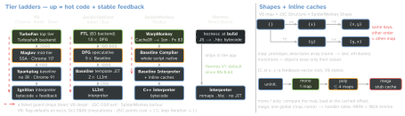
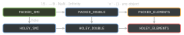

runtime · folio
In one line: An engine turns source into bytecode, interprets it while recording
feedback (maps, types, call targets) and compiles hot functions in tiers that
speculate on that feedback — a failed guard deoptimises to the bottom tier.
Objects share hidden classes, so an inline cache turns o.x into one compare
and one load. Memory is a tracing, generational GC: what is reachable lives.
Download PDF Print view LaTeX source


From source to machine code (V8)
- Lazy parsing: inner functions are only pre-parsed and compiled on first call;
(function(){…})is assumed called and compiled eagerly. Chrome 136://# allFunctionsCalledOnLoadatop a file compiles it all eagerly, off the main thread — 17 of 20 pages faster, -630 ms foreground on average; “use sparingly”. - Ignition: register machine + accumulator; bytecode 25–50 % the size of the old baseline machine code (2016). Each function’s feedback vector records the maps, types and call targets every site has seen — the input to every higher tier.
- Sparkplug (2021): one linear pass bytecode → machine code, no IR, interpreter-shaped frames, no optimisation; Speedometer +5–10 %.
- Maglev (2023): SSA + CFG, compiles ∼10× slower than Sparkplug and ∼10× faster than TurboFan; on in Node from 22 (V8 12.4).
- TurboFan: inlines (callee ≤ 460 bytes of bytecode, 920 cumulative), removes checks, unboxes numbers. Its backend is Turboshaft, a CFG IR that halved compile time against Sea of Nodes (2025); the frontend is being replaced by Maglev —
--turbolev(Maglev + Turboshaft as the 4th tier) exists, off by default. - OSR (on-stack replacement): a long loop tiers up mid-run (flags: OSR 500, Maglev OSR 100); a tier-up waits ≥ 500 invocations after the last IC change.
Speculation and deoptimisation
- Optimised code guards each assumption (map check, “is Smi”, bounds). Eager deopt: a guard fails, exit now. Lazy: an assumption the code depends on was broken elsewhere — the code is marked and exits when it next runs. The frame is rebuilt as an interpreter frame and execution continues there.
- JSC: an OSR exit returns to Baseline / LLInt; after 100 ·2R exits (R = reoptimisations so far) the code is jettisoned and recompiled with the new profile. Watchpoints drop a check entirely: the runtime invalidates the code when the watched fact changes. Compile cost: DFG 4× Baseline, FTL 6× DFG.
- See it:
node --trace-opt --trace-deopt;--allow-natives-syntaxadds%OptimizeFunctionOnNextCall,%GetOptimizationStatus. --jitless(V8 7.4) allocates no executable memory: Ignition only, regexps interpreted — for iOS, TVs, consoles. Cost (2019): Speedometer 2 ∼40 % slower, Web Tooling ∼80 %.
Hidden classes
- Properties live in-object (fastest), in a fast out-of-object array (slot from the descriptor array), or in a dictionary — a per-object hash table, used once many properties are added and deleted.
- Slack tracking: a constructor’s objects start with the expected properties + 8 spare in-object slots; after 7 constructions the size is fixed and spare slack cut.
- Field representation is in the map: a field of small ints is Smi, one holding other numbers Double. A double stored into a Smi field deprecates the map; objects migrate lazily on next access. React (2019):
Object.preventExtensions+ a later Smi → Double change orphaned shapes (V8 7.4 fixed it); init timestamps withNaN, not0.
Elements kinds — downhill only

21 kinds (2017), plus kinds for typed arrays — the choice for numeric work. new Array(n) or a write past the end makes holes; holes, and reads past length, cost prototype-chain lookups.
// node --allow-natives-syntax
const a = { x: 1, y: 2 }, b = { y: 2, x: 1 };
%HaveSameMap(a, b); // false: other transition path
const arr = [1, 2, 3]; // PACKED_SMI_ELEMENTS
arr.push(4.56); // PACKED_DOUBLE_ELEMENTS
arr.push('x'); // PACKED_ELEMENTS
arr[9] = 1; // HOLEY_ELEMENTS, for goodSmis and pointer compression
- Tagged slot: low bit
0= Smi (integer in the slot),1= pointer. Other numbers are boxed HeapNumbers; a Double field updates its box in place. - Pointer compression (V8 8.0, Dec 2019; Chrome): slots are 32-bit offsets into a 4 GB cage, Smis 31-bit; V8 heap up to 43 % smaller.
- Off in official Node builds: the configure flag
--experimental-enable-pointer-compressioncaps the heap at 4 GB and breaks the addon ABI — Node keeps 64-bit slots and 32-bit Smis. - Node → V8: 22 → 12.4 · 24 (May 2025) → 13.6 · 25 (Oct 2025) → 14.1 · 26 (May 2026, LTS due Oct) → 14.6.
Garbage collection — tracing, generational
Live = reachable from roots; a cycle with no path from a root dies whole — no weak needed, unlike ARC. Most objects die young, so all four split the heap (V8 shown):
| GC | young | old |
|---|---|---|
| V8 Orinoco | semi-spaces; parallel scavenger (6.2): -20–50 % time | concurrent marking (write barriers), concurrent sweeping, parallel compaction |
| JSC Riptide (2017) | sticky mark bits — generational without moving | concurrent + parallel mark-sweep, non-copying, retreating-wavefront barrier; pauses mostly ≤ 1 ms |
| SpiderMonkey | nursery = minor GC | tenured: incremental slices, zones; compaction rare, or under memory pressure |
| Hermes Hades | copying, as the old GenGC | concurrent snapshot-at-the-beginning mark-sweep, free lists, one segment compacted per cycle; incremental on 32-bit |
Weak references
WeakMap/WeakSet(ES2015): keys (objects, non-registered symbols) held weakly — the value lives only while its key does; not iterable. Per-object side tables.WeakRef+FinalizationRegistry(ES2021):deref()may giveundefined; a target read in a job survives to that job’s end; cleanup callbacks may run late or never — hints, not program logic.
Finding leaks
- A leak is unwanted reachability: listeners never removed, live timers, unbounded
Mapcaches, globals, detached DOM held by JS, closure contexts. DevTools tells a leak (grows) from bloat (too big) and frequent GC. - Heap snapshot: shallow size (the object) vs retained size (freed with it); the Retainers path and distance from the root say who keeps it. Snapshot, repeat the action, snapshot, Comparison view; filter detached nodes.
- Node:
--inspect+ DevTools,--heapsnapshot-signal=SIGUSR2,v8.writeHeapSnapshot()— synchronous, blocks the event loop, needs ∼2× the heap;v8.queryObjects(Ctor)(22.0) counts live instances for leak tests.
Traps
- “
try/catchblocks optimisation” — true of Crankshaft, retired 2017; TurboFan optimises it. - Synthetic benchmarks: Warp lost on Octane and Kraken and won 20 % on Google Docs load; a cold loop times the interpreter.
delete-churn objects end in dictionary mode — dynamic keys belong in aMap.- One
-0,NaNor hole in an int array changes its kind for good.